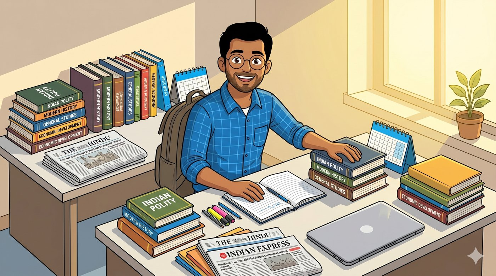
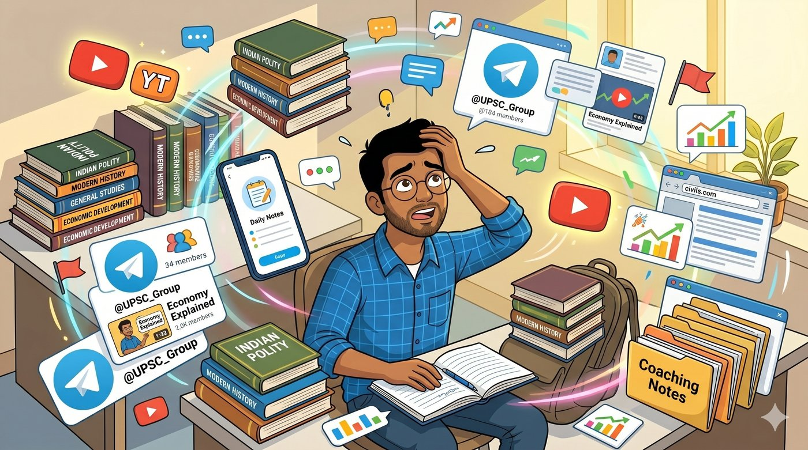
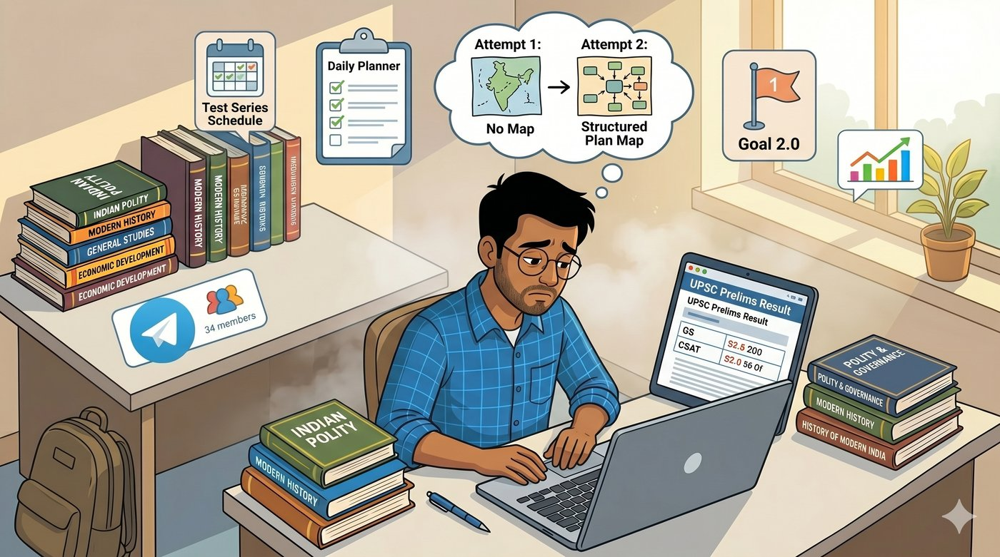
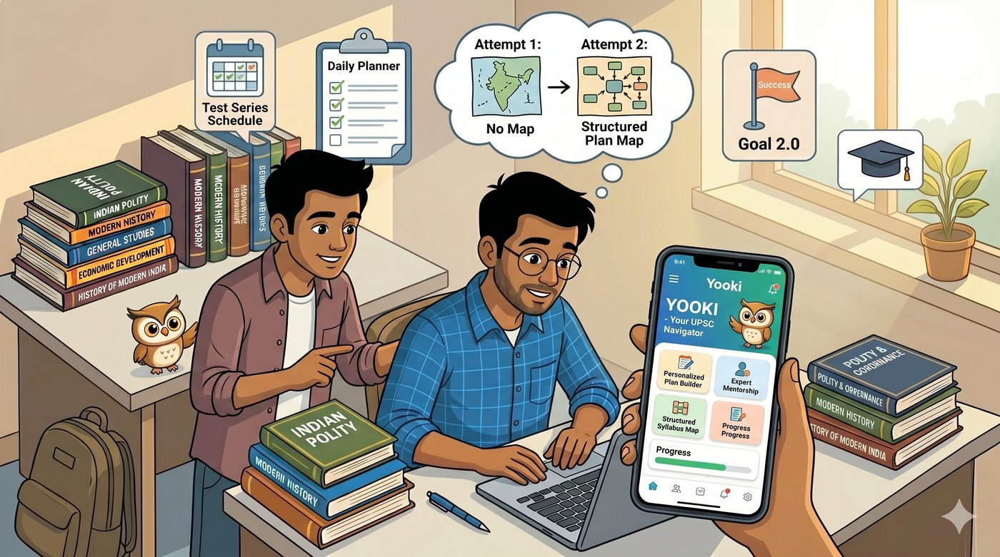
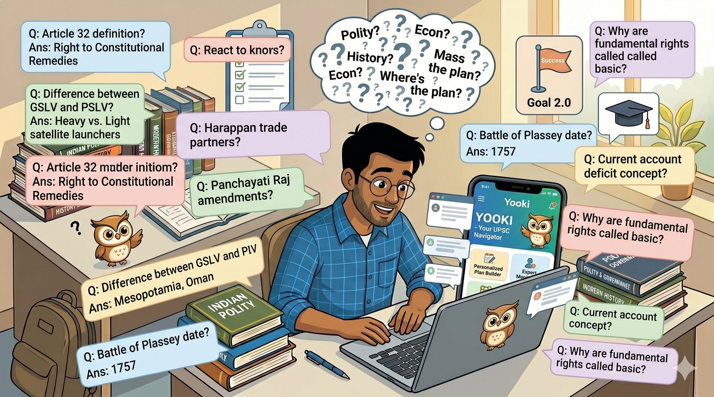
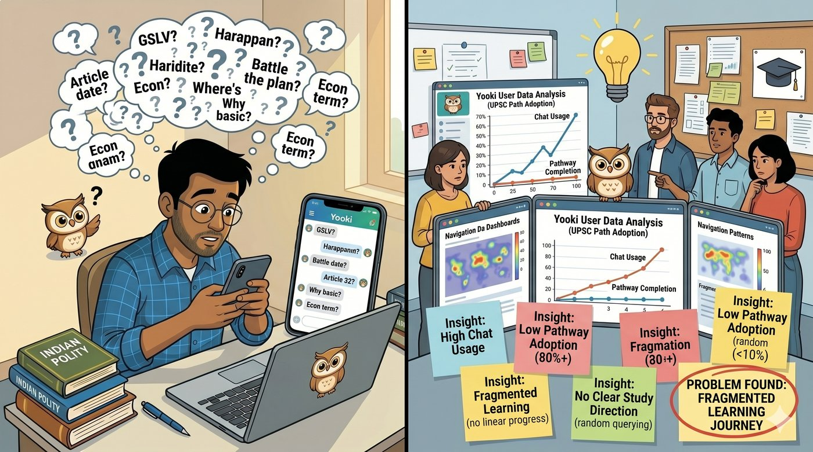
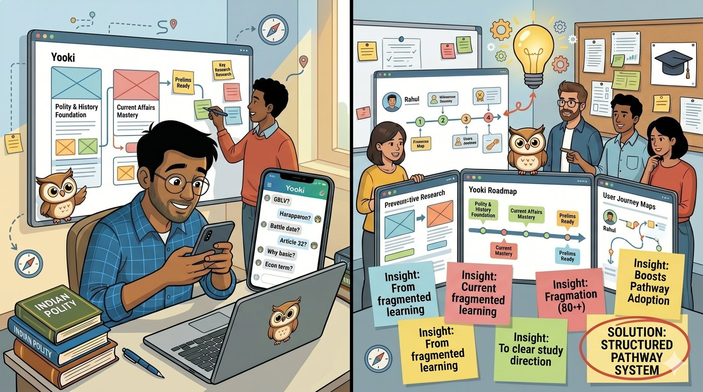
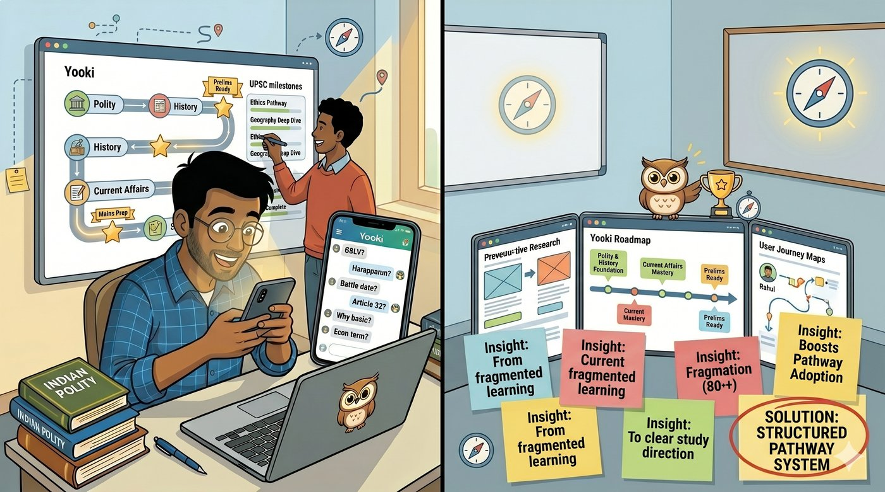
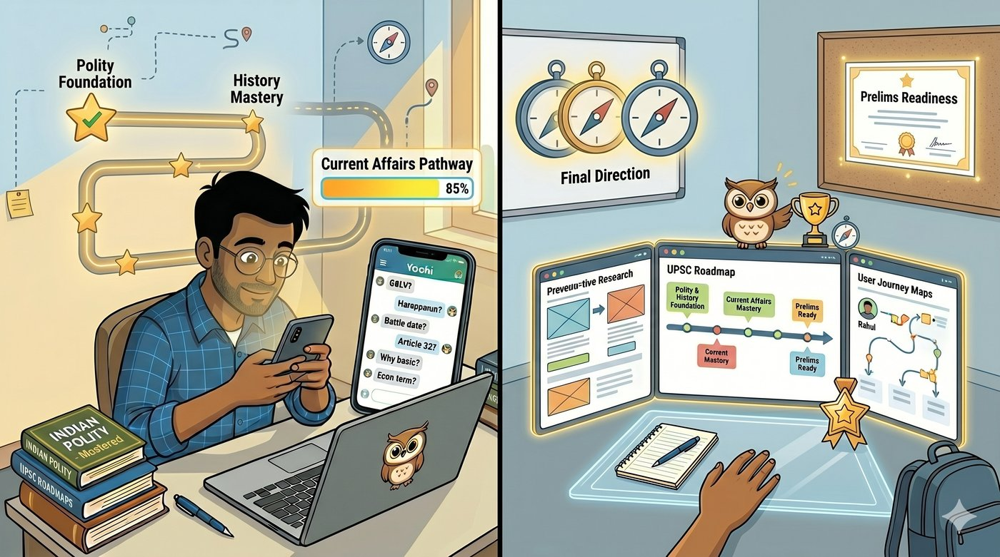
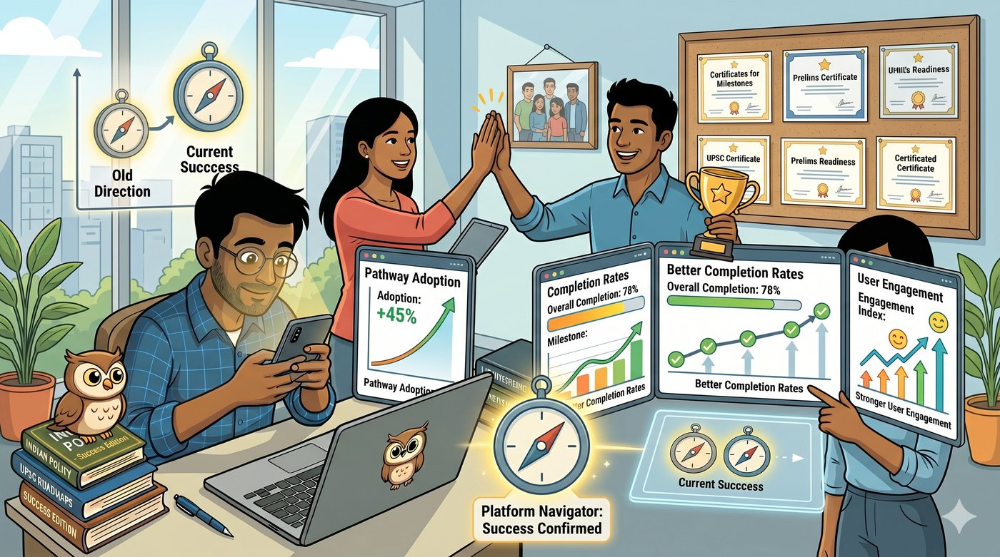

Designing an AI Learning System for Navigating UPSC Complexity
Overwhelming Complexity
UPSC civil service preparation in India is notorious for its massive, complex, and highly overwhelming syllabus.
Siloed Aspirant Hustle
Students constantly shuffle between hundreds of static subjects, current affairs updates, and unlinked mock tests.
Connected AI Platform
An AI-powered conversational system replacing passive content with a connected syllabus universe and behavioral progress mapping.
Visualizing the UPSC Journey: From Issue to Solution










Making the vast UPSC syllabus manageable
Standard learning platforms represent preparation progress linearly (e.g., "45% Completed"), which fails to capture how students actually study—revising old topics while referencing new ones. This siloed model leads to key pain points:
-
Topic Navigation Constraints
Aspirants struggled to locate topics within the larger, complex syllabus system.
-
Siloed Contexts
Learning behavior was naturally associative, but legacy prep platforms remained completely siloed.
-
Invisible Preparation Gaps
Progress tracking failed to represent real preparation behavior, keeping weak and neglected areas hidden.
Designing Preparation as a Behavioral System
Rather than approaching the product as a traditional educational dashboard, Yooki was structured as an adaptive learning system — observing study frequency, topic engagement, and revision behavior to surface the most useful next step. The information architecture below shows how a single search query flows into a comprehensive, connected learning journey.
73rd Amendment, 3-tier local self-governance model.
💡 Click any stage in the flowchart to inspect the path highlights or trigger topic shifts!
Creating Grounding Within Preparation
We designed grounding parameters to make weak and neglected areas visible. Instead of flat progress lists, the interface exposes preparation signals in real time. We realized that information scarcity wasn't the issue; cognitive overload was.
Making Topic Relationships Visible
UPSC topics rarely exist independently. Governance overlaps with polity, economy intersects with current affairs, and environmental issues connect across multiple preparation layers. We designed interconnected syllabus pathways so aspirants could explore contextual relationships between subjects.
Supporting associative learning behaviour meant helping aspirants remember concepts through relationships rather than isolated memorisation. The system visualised preparation distribution across subjects — moving from linear completion percentages to a connected syllabus ecosystem.
Designing Measurable Preparation Behavior
Large syllabus structures can quickly become difficult to interpret visually. We introduced a colour-coded interaction system that communicated preparation states, topic depth, and learning intensity — turning abstract study patterns into legible visual signals.
Neglected areas are invisible
Aspirants couldn't see which topics had gone unstudied for weeks — or which subjects they were systematically avoiding.
Colour intensity encodes recency and depth
A topic studied yesterday looks different from one studied three weeks ago. The system makes neglect legible at a glance.
Weak areas stay hidden
Quiz performance and revision patterns pointed to weak areas — but this signal was buried in a separate analytics screen no one opened.
Weakness surfaced directly on the topic graph
Weak areas appear as a secondary visual layer on the topic graph — making them impossible to overlook during normal navigation.
We designed a layered progress system that measured preparation across syllabus coverage, topic engagement, and interconnected learning activity — translating preparation into visible learning signals that made the next action obvious.
Designing Contextual AI Guidance
Standard AI assistants answer questions. What UPSC aspirants needed was different — an AI that understood where they were in their preparation and could orient them, not just inform them.
Standard AI assistants answer questions. What UPSC aspirants needed was an AI that understood where they were in preparation and could orient them — not just inform them.
Build the AI guidance layer on top of the topic graph. Every response is contextualised by the user's preparation spread — connected syllabus relationships, study behaviour, and surrounding context.
The system transformed the syllabus from a static preparation document into a navigable learning ecosystem.
Complexity doesn't need to be removed — it needs to be made navigable.
The full UPSC syllabus structure was preserved, but made approachable through preparation spread, topic relationships, and colour-coded depth signals.
The key design decision was to prioritise orientation over information.
Rather than surfacing more content, Yooki focused on helping aspirants understand where they were — which turned out to be the missing layer entirely.
Contextual AI is more useful than reactive AI.
Grounding every AI response in the user's preparation graph produced suggestions that felt relevant rather than generic — the difference between advice and orientation.
The same visual primitives extended across the entire system.
Preparation spread, topic colour, and connection mapping applied equally to navigation, AI guidance, and revision planning — without requiring structural changes.
The system is built to scale.
Conception tracking, current affairs integration, and future AI-assisted review flows can all be added using the same graph-based foundation — without rearchitecting the product.